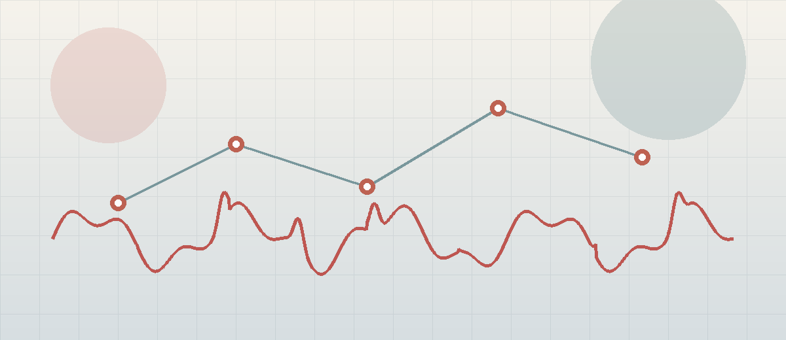

Academic Homepage
Control & AI
My background is in automation and control. During my internship at COMAC, I worked on flight-control algorithms and tested my calculations against experimental data. For my undergraduate project, I used machine learning to estimate blood pressure from pulse signals. I’m now pursuing an MSc in Computer Control and Automation at Nanyang Technological University in Singapore, where I fine-tuned a language model to classify sentiment in product reviews.

Featured project
2025.06
Estimating blood pressure from pulse signals
- I trained LightGBM on features extracted from individual pulses and a CNN–LSTM on waveform sequences.
- On patients held out from training, the two models achieved similar prediction errors.
- I used SHAP to examine which features contributed most to the LightGBM estimates.
Education
2025.08 - Present
Nanyang Technological University
MSc, Computer Control and Automation
CGPA: 4.57/5. Core coursework includes computer control systems, genetic algorithms and machine learning, robotics and intelligent sensors, video signal processing, and 5G communication.
2023.09 - 2025.06
City St George's, University of London
BEng, Electrical and Electronic Engineering (Avionics and Control)
Average: 88/100. Graduated with First Class Honours.
2021.09 - 2023.07
Nanjing University of Aeronautics and Astronautics
BEng study, Automation (Avionics and Control)
Average: 82/100. Coursework covered digital circuits, analog electronics, computer hardware, circuit theory, Python, mathematics, and physics.
Internship Experience
2024.06 - 2024.07
COMAC Shanghai Aircraft Design and Research Institute
Intern, Flight Control Systems Department
- Learned civil aircraft development workflows and flight control system fundamentals.
- Assisted foundational algorithm research for flight control systems, including inertial parameter correction derivations.
- Conducted simulation analysis and engineering verification with experimental data.
- Supported laboratory tests for typical flight control systems.
Skills
IELTS 7.5; strong English writing and speaking
Python and MATLAB programming
Machine learning and deep learning model training
Logical thinking, learning ability, and pressure resilience
Communication and teamwork